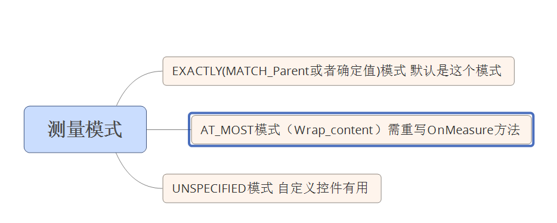

要了解MeasureSpec这个类的来弄去脉的话，务必要对测量的三种模式了解。
1.EXACTLY(精准的)
当您设置View的layout_height属性或layout_width属性为确定的值或者为match_parent（填充父容器）时候，系统就将View测量模式设置为EXACTLY模式。
2.AT_MOST(最大值)
即布局为最大值模式，那么什么时候系统会将View调整为AT_MOST模式了，即当您设置View的layout_height属性或layout_width属性为wrap_content（包裹内容）时候。
3.UNSPECIFIED(未确定)
即没有确定，没有指定大小测量模式，view即“心有多大，舞台就有多大"。这个方法，一般在自定义控件中才能用到。
View测量的时候，默认是EXACTLY模式，也许你会感到纳闷，TextView，EditText这些控件，他怎么就支持wrap_content属性了，难道他重写OnMeasure方法，是的，他们都重写OnMeasure方法。这就是为什么我们在自定义控件的时候，如果要布局支持wrap_content属性，就需要重写onMeasure方法，来指定wrap_content为确切的大小。
这个关于测量模式的思维导图应该是这样的：
